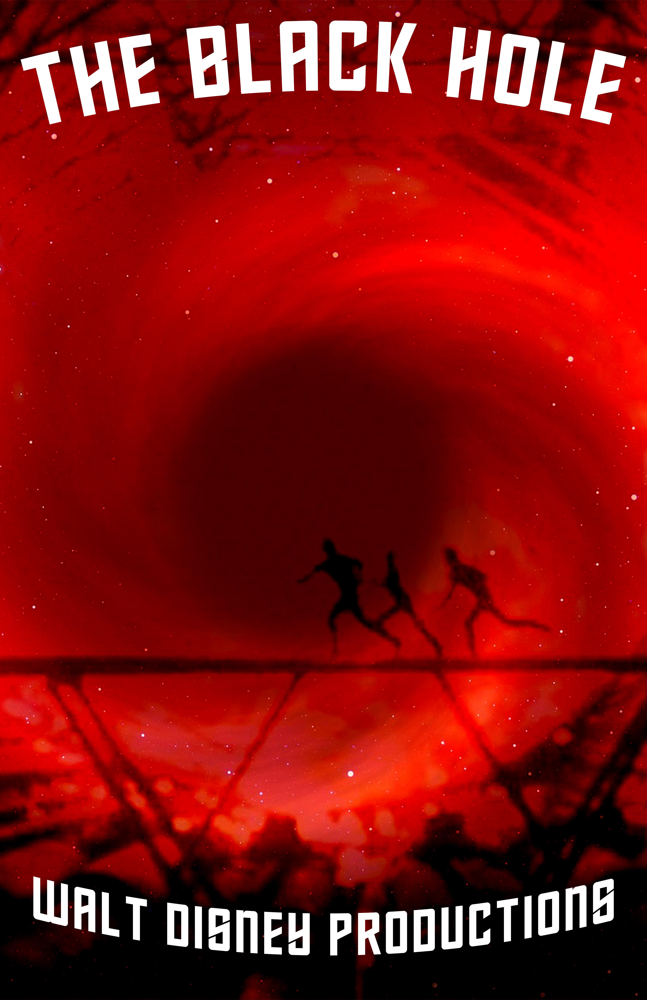
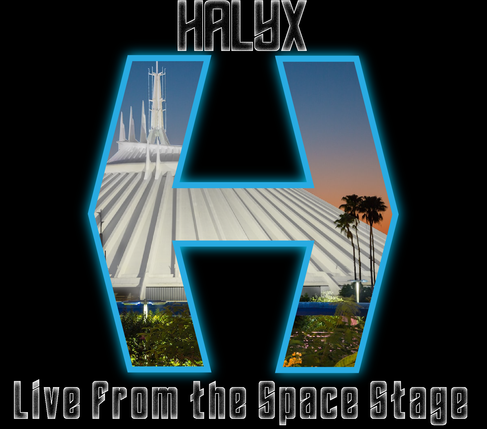

The Black Hole Posters

So here is yet another movie poster were tasked to work on, also for a film of choice. Remember how I mentioned multiple candidates in the last section? This film was one of those candidates I was considering. While this is far from the best Disney film, Black Hole has such a weird and fascinating story behind it's production and I really like what it does manage to pull off. It's essentially a disaster movie in space with some of the worst and greatest practical effects I've ever seen. The buildup to the end is also phenomal.
So while the film is known for being Disney's first PG film, that rating has lost any meaning since then. While watching the film I noticed a few tweaks could easily turn it into a horror film in space. That thought was the insiration for the direction I wanted to take with this poster. I wanted it to look menacing and my only real rules was that it had to include the following; Maximillian, one of the main antagonists, the ship USS Cygnus, the setting, and the titular black hole itself. I have a reason for making the poster mostly red but I won't explain why for spoiler reasons.
We were also instructed to make an alternate poster for our movie of choice. For the one on the right I decided
take a different angle. with the first poster, Maximillian, the USS Cygnus, and the black hole were
must haves. I actually dropped Maximillian and instead took a shot from the interior of the ship instead,
then just simply got the same black hole image used for the first poster and messed around with
blending options. Considering it was admittedly a bit of a rushed job, I quite like how it looks!
It's a play on that iconic shot where the protagonists are running across the bridge with a meteor
rolling towards the camera. The blending options almost makes it look like the three are being
disintergrated by the titular black hole itself. Once again I was aiming for that untapped
horror aspect of the film.
So at one point we were told to make an album cover for a band of our choice.
I don't really listen to traditional bands and music so this was a little weird
for me to make a decision on, if I'm being honest. I decided to combine
my interest with theme park history with music for this assignment.
Halxy, for those who are unfamiliar, was a sci-fi themed rock band that played
at Disneyland's space stage outside Space Mountain in 1981. They only played June to
September that year but man they got some good stuff! The general lack of color with the
cover is just because a lot of their photos are still in black and white. Other than that, I simply
tried recreating the "H" logo and decided to put Space Mountain inside it as a callback to their
stage.
Halyx Album Cover
